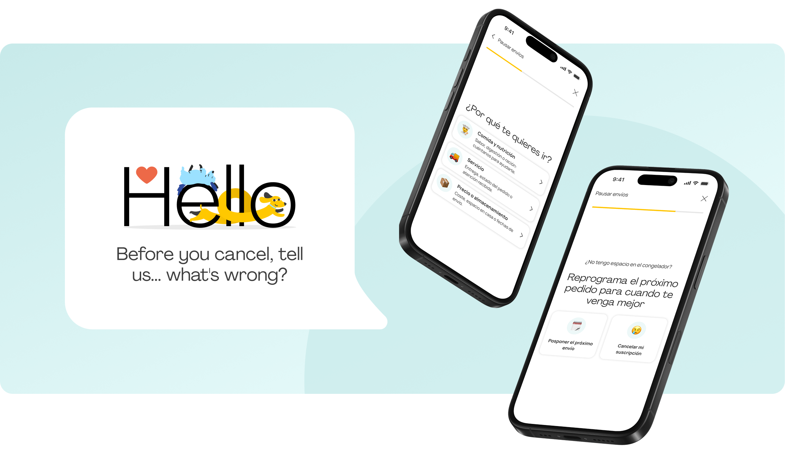
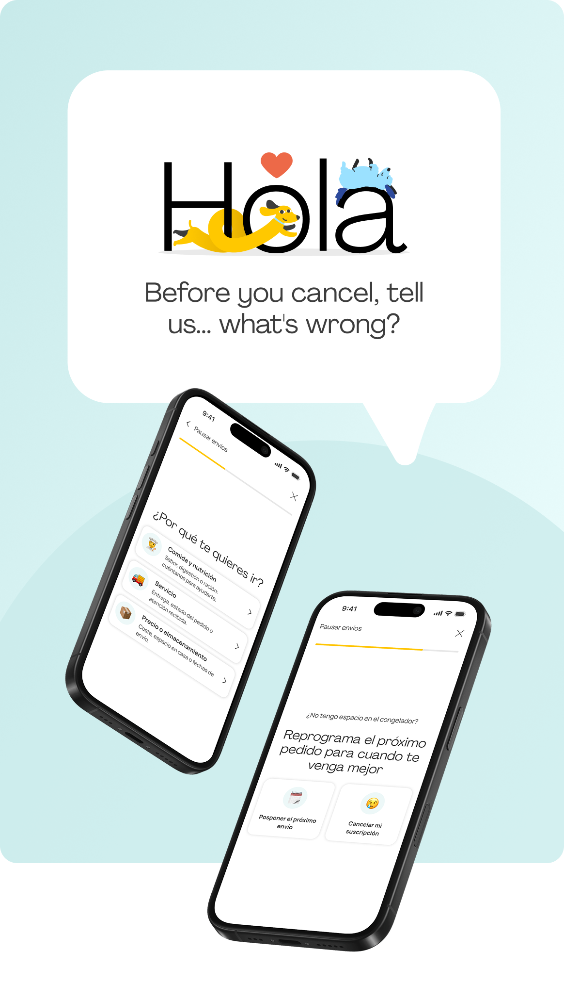

Before

Dogfy Diet
Turning a generic cancellation flow into a personalised experience based on why customers leave.
Product Designer, UX/UI Design, Front-end Dev
Figma
Petfood
2024
Dogfy Diet is a fresh dog food subscription service operating across Spain, France, Italy and Germany. Cancellation was a critical moment in the customer journey: customers were leaving for very different reasons, some of which could potentially be solved within the product itself.
The pause flow was a quiet leak: this is where users were slipping away.
Redesign the experience without touching the backend logic.
Improve the pause KPI — cut avoidable drop-off without limiting customer autonomy.



How might we reduce avoidable cancellations without compromising customer autonomy?
The goal wasn't to make cancellation harder. It was to understand the reason behind it and offer a genuinely useful alternative when possible.
The reason is the product.
We couldn't design a relevant retention strategy without first understanding why customers wanted to leave.
Instead of treating cancellation as a single linear flow, I redesigned it as a decision tree based on the customer's specific reason.
I owned the UX design from discovery to development, working closely with Customer Care, Nutrition, Business and Engineering.
My main focus was translating business rules and customer scenarios into a flow that could actually be implemented and maintained.
This meant mapping states, defining edge cases, specifying tracking requirements and aligning the experience with the backend logic.
Before designing a single screen, I mapped the logic behind the experience.
I deliberately looked for the scenarios that could break the happy path:
Each edge case became an explicit product decision.
Instead of sending every customer through the same cancellation journey, the new experience adapts to their specific reason for leaving.
Identify the reason → understand the friction → offer a relevant solution → let the customer decide.
We deliberately didn't try to retain every customer.
For sensitive situations, such as the loss of a pet, the right product decision wasn't to introduce another offer or incentive. It was to provide a respectful and straightforward way to leave.
Retention should solve a real problem — not make cancellation harder.
Business impact
UX impact
Operational efficiency
Metrics to be validated with the final product data.